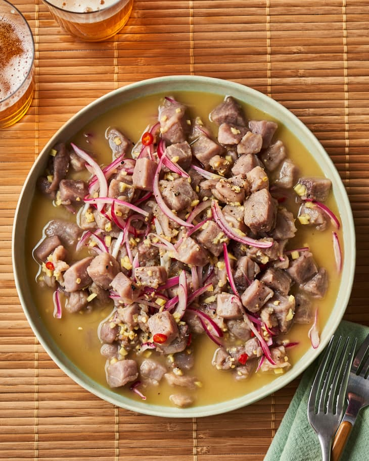

Kilawin Recipe

"Mouth tasting filipino ceviche or known as kilawin"
Kinilaw is considered an appetizer much like Latin America’s ceviche or seviche (you can think of it as the Filipino version of ceviche). In fact, there are a lot of ceviche variants from all over the world but this version from the Philippines is something that you must try.
Though most would think of this dish as an appetizer, for Filipinos it is more commonly used as a side dish during beer-drinking sessions, referred to as “pulutan“. Its preparation is different too! After all, if most ceviche recipes are normally soaked in citrus juices, kinilaw is rather soaked in vinegar.
Ingredients:
- 500 grams fresh yellowfin tuna fillet, cut into cubes
- 3/4 cup vinegar (for washing)
- 1/3 cup vinegar (or spiced vinegar if you have one)
- 1 red onion, chopped
- 2 tablespoons of ginger, sliced into fine strips or small cubes
- 4 tablespoons of Filipino calamansi (you can also use lime or lemon as a substitute)
- Salt and freshly ground black pepper to taste
- 3 pieces Thai chili or bird’s eye chili, chopped (optional)
- 1 tablespoon of sugar (optional)
- 1 tomato, diced (optional)
Steps:
- Prepare all of the ingredients.
- Get a bowl and combine the cubed fish and the 3/4 cup vinegar. Mix them well and let them stand for 2 minutes. Afterward, drain the vinegar while slightly squeezing out the fish cubes.
— This ‘washing’ procedure will help reduce the fishy smell.
- Now, combine all the remaining ingredients. Gently toss until all are well blended.
- Cover and place inside the fridge for at least 30 minutes.
— It’s fine even if you chill it for more time, but too much might ‘overcook’ the fish. The maximum time I would say is 3 hours!
- Serve chilled. Share and enjoy with a pairing of beer!
Home